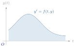
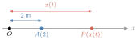
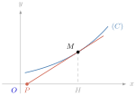
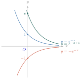

- សមីការឌីផេរ៉ង់ស្យែលលីនេអ៊ែរលំដាប់ទី 1
- សមីការឌីផេរ៉ង់ស្យែលលីនេអ៊ែរលំដាប់ទី 2
សមីការឌីផេរ៉ង់ស្យែលជាទំនាក់ទំនងរវាងអនុគមន៍ ដេរីវេរបស់អនុគមន៍ និងអថេរសម្រាប់បកស្រាយចំណោទ និងបាតុភូតដែលកើតឡើងក្នុងធម្មជាតិ និងក្នុងវិទ្យាសាស្ត្រ ។
គេប្រើសមីការឌីផេរ៉ង់ស្យែល ដើម្បីពណ៌នាអំពីការវិវឌ្ឍរូបធាតុនៃវត្ថុទាំងឡាយទៅតាមពេលវេលា ដើម្បីពន្យល់ និងទស្សន៍ទាយទុកជាមុននូវដំណើរការប្រែប្រួលជាបន្តបន្ទាប់នៃរាល់វត្ថុទាំងនោះ ។
ឧទាហរណ៍ : ចលនាទម្លាក់សេរីត្រូវបានបកស្រាយដោយសំទុះនៃទំនាញផែនដី \(\displaystyle g\) ។ ដូច្នេះ គេបានចំណោទនៃចលនាទម្លាក់សេរី \(\displaystyle y'' = g\) ។ ដោយធ្វើអាំងតេក្រាលលើអង្គទាំងពីរ គេបានល្បឿននៃចលនាទម្លាក់សេរីគឺ \(\displaystyle y' = \frac{dy}{dt} = gt + v_{0}\) (\(\displaystyle v_{0}\) ជាល្បឿនដើម) ចម្ងាយចរគឺ \(\displaystyle y = \frac{1}{2}gt^{2} + v_{0}t + y_{0}\) (\(\displaystyle y_{0}\) ជាកម្ពស់នៅខណៈ \(\displaystyle t = 0\) ឬ \(\displaystyle y_{0}\) ជាកម្ពស់មិនទាន់គិតរយៈពេល)
មេរៀនទី 1 : សមីការឌីផេរ៉ង់ស្យែលលីនេអ៊ែរលំដាប់ទី 1
វត្ថុបំណង
- កំណត់សញ្ញាណសមីការឌីផេរ៉ង់ស្យែលលីនេអ៊ែរលំដាប់ទី 1
- កំណត់ចម្លើយនៃសមីការឌីផេរ៉ង់ស្យែលលំដាប់ទី 1
- ដោះស្រាយសមីការឌីផេរ៉ង់ស្យែលលំដាប់ទី 1
- រកចម្លើយនៃសមីការឌីផេរ៉ង់ស្យែលលំដាប់ទី 1 តាមលក្ខខណ្ឌដើម
- សង់ខ្សែកោងតាងអនុគមន៍ចម្លើយនៃសមីការឌីផេរ៉ង់ស្យែលលំដាប់ទី 1
- បកស្រាយបាតុភូតធម្មជាតិជាសមីការឌីផេរ៉ង់ស្យែល ។
B. សញ្ញាណសមីការឌីផេរ៉ង់ស្យែលលីនេអ៊ែរលំដាប់ទី 1
ឧទាហរណ៍ : គេមានអនុគមន៍ \(\displaystyle y = Cx - 3\) កំណត់លើ \(\displaystyle \mathbb{R}\) ចំពោះគ្រប់ចំនួនពិត \(\displaystyle C\) ។ គណនាដេរីវេទី 1 \(\displaystyle y'\) រួចសរសេរទំនាក់ទំនងរវាង \(\displaystyle y\) និង \(\displaystyle y'\) ។
ដំណោះស្រាយ
- គណនាដេរីវេទី 1 \(\displaystyle y'\) : \(\displaystyle y = Cx - 3 \implies y' = C\)
- សរសេរទំនាក់ទំនងរវាង \(\displaystyle y\) និង \(\displaystyle y'\) ៖
គេបាន \(\displaystyle y = xy' - 3\)
\(\displaystyle y + 3 = xy'\)
\(\displaystyle y' = \frac{1}{x}y + \frac{3}{x}\) ឬ \(\displaystyle y' - \frac{1}{x}y = \frac{3}{x}\) ។
សមីការ \(\displaystyle y' - \frac{1}{x}y = \frac{3}{x}\) ហៅថាសមីការឌីផេរ៉ង់ស្យែលលីនេអ៊ែរលំដាប់ទី 1 ដែលមានអនុគមន៍ \(\displaystyle y = Cx - 3\) ជាចម្លើយទូទៅនៃសមីការឌីផេរ៉ង់ស្យែលនេះ ។
និយមន័យ
- សមីការឌីផេរ៉ង់ស្យែលលំដាប់ទី 1 ជាទំនាក់ទំនងរវាងអនុគមន៍ ដេរីវេទី 1 របស់អនុគមន៍នេះ អថេរ និងចំនួនថេរ ។
- ចម្លើយនៃសមីការឌីផេរ៉ង់ស្យែល ជាអនុគមន៍មួយ ដែលអនុគមន៍នេះ និងដេរីវេរបស់វាផ្ទៀងផ្ទាត់សមីការ ។
- លំដាប់នៃសមីការឌីផេរ៉ង់ស្យែល គឺជាលំដាប់នៃដេរីវេខ្ពស់ជាងគេក្នុងសមីការ ។
អនុគមន៍ចម្លើយនៃសមីការឌីផេរ៉ង់ស្យែលមានច្រើនរាប់មិនអស់ ។ គ្រប់ខ្សែកោងដែលតាងចម្លើយនីមួយៗនៃសមីការ បង្កើតបានជា គ្រួសារនៃខ្សែកោង ។
គេមានអនុគមន៍ \(\displaystyle y = Ke^{-3x}\) កំណត់លើ \(\displaystyle \mathbb{R}\) ចំពោះគ្រប់ចំនួនពិត \(\displaystyle K\) ។ សរសេរសមីការឌីផេរ៉ង់ស្យែលលំដាប់ទី 1 ដែលមាន \(\displaystyle y = Ke^{-3x}\) ជាចម្លើយទូទៅ
\(\displaystyle y = Ke^{-3x}\) នាំឱ្យ \(\displaystyle y' = -3Ke^{-3x} = -3y\) គេបាន \(\displaystyle y' + 3y = 0\) ជាសមីការឌីផេរ៉ង់ស្យែលលំដាប់ទី 1 ដែលមាន \(\displaystyle y = Ke^{-3x}\) ជាចម្លើយទូទៅ ។
បង្ហាញថាអនុគមន៍ខាងក្រោម ជាចម្លើយនៃសមីការឌីផេរ៉ង់ស្យែលត្រូវគ្នារបស់វា :
- ក. អនុគមន៍ \(\displaystyle y = Ke^{-\frac{1}{2}x}\) សមីការ \(\displaystyle 2y' + y = 0\)
- ខ. អនុគមន៍ \(\displaystyle y = 5\tan 5x\) សមីការ \(\displaystyle y' - y^{2} = 25\) ។
C. ដំណោះស្រាយសមីការឌីផេរ៉ង់ស្យែលលំដាប់ទី 1
សមីការមានទម្រង់ \(\displaystyle \frac{dy}{dx} = f(x)\)
ឧទាហរណ៍ : វត្ថុ \(\displaystyle P\) មួយផ្លាស់ទីតាមអ័ក្ស \(\displaystyle \overrightarrow{Ox}\) ដែលមានចំណុច \(\displaystyle O\) ជាគល់ ដោយល្បឿនថេរ \(\displaystyle a\) (គិតជា \(\displaystyle \text{m}\) ក្នុង \(\displaystyle 1\) នាទី) ។ តាង \(\displaystyle x(t)\) ជាចម្ងាយដែល \(\displaystyle P\) ផ្លាស់ទីចេញពីចំណុច \(\displaystyle O\) នៅលើអ័ក្សអស់រយៈពេល \(\displaystyle t\) ។
- ក. សរសេរសមីការឌីផេរ៉ង់ស្យែល ដើម្បីគណនាចម្ងាយចរក្នុងរយៈពេល \(\displaystyle t\) ។
- ខ. គណនាចម្ងាយចរដែល \(\displaystyle P\) ផ្លាស់ទីអស់រយៈពេល \(\displaystyle t\) បើគេដឹងថានៅខណៈពេល \(\displaystyle t = 0\) វត្ថុ \(\displaystyle P\) នៅត្រង់ចំណុច \(\displaystyle A\) ដែលមានចម្ងាយ \(\displaystyle 2\text{ m}\) ចេញពីគល់ \(\displaystyle O\) ។ រកចម្លើយនៅខណៈពេល \(\displaystyle t = 3\) នាទី ។
ដំណោះស្រាយ

- ក. បើ \(\displaystyle x(t)\) ជាចម្ងាយចរដែល \(\displaystyle P\) ផ្លាស់ទីក្នុងរយៈពេល \(\displaystyle t\) នោះល្បឿននៃការផ្លាស់ទីរបស់វត្ថុ \(\displaystyle P\) គឺ \(\displaystyle x'(t)\) ។
ដោយល្បឿននេះស្មើនឹង \(\displaystyle a\) នោះគេបាន \(\displaystyle x'(t) = a\) ដែល \(\displaystyle x'(t)\) ជាដេរីវេនៃ \(\displaystyle x(t)\) ។
សមីការ \(\displaystyle x'(t) = a\) អាចសរសេរជា \(\displaystyle \frac{dx}{dt} = a\) ។
ដើម្បីគណនាចម្ងាយចរ \(\displaystyle x(t)\) ក្នុងរយៈពេល \(\displaystyle t\) គេត្រូវដោះស្រាយសមីការ \(\displaystyle \frac{dx}{dt} = a\) ។
\(\displaystyle \frac{dx}{dt} = a\) នាំឱ្យ \(\displaystyle dx = adt\) ដោយធ្វើអាំងតេក្រាលលើអង្គទាំងពីរនៃសមីការ
គេបាន \(\displaystyle \int dx = \int adt\)
\(\displaystyle x(t) = at + c\), \(\displaystyle c\) ជាចំនួនពិតថេរណាមួយក៏បាន
ដូច្នេះ \(\displaystyle x(t)\) ជាចម្ងាយចរដែល \(\displaystyle P\) ផ្លាស់ទីបានក្នុងរយៈពេល \(\displaystyle t\) ជាចម្លើយនៃសមីការឌីផេរ៉ង់ស្យែល \(\displaystyle \frac{dx}{dt} = a\) ។ - ខ. គណនាចម្ងាយចរ
គេមាន \(\displaystyle x(t) = at + c\)
បើនៅពេល \(\displaystyle t = 0\) ហើយ \(\displaystyle P\) មានចម្ងាយ \(\displaystyle 2\text{ m}\) ចេញពីគល់ \(\displaystyle O\) មានន័យថា \(\displaystyle t = 0, x = 2\)
នោះគេបាន \(\displaystyle x(0) = a(0) + c\) ដោយ \(\displaystyle x(0) = 2\) នោះ \(\displaystyle c = 2\)
ដូច្នេះ \(\displaystyle x(t) = at + 2\) ជាចម្លើយមួយនៃសមីការឌីផេរ៉ង់ស្យែល \(\displaystyle \frac{dx}{dt} = a\) ក្នុងករណី \(\displaystyle (t = 0, x = 2)\) បើ \(\displaystyle t = 3\) នោះ \(\displaystyle x(3) = 3a + 2\) ។
- សម្គាល់ សមីការ \(\displaystyle x'(t) = a\) ហៅថាសមីការឌីផេរ៉ង់ស្យែលលំដាប់ទី 1 ដែលមានទម្រង់សមីការទូទៅ \(\displaystyle \frac{dx}{dt} = f(t)\)
អនុគមន៍ \(\displaystyle x(t) = at + c\) ហៅថាចម្លើយទូទៅនៃសមីការឌីផេរ៉ង់ស្យែល \(\displaystyle x'(t) = a\)
អនុគមន៍ \(\displaystyle x(t) = at + 2\) ជាចម្លើយមួយនៃសមីការក្នុងករណី \(\displaystyle (t = 0, x = 2)\) ហៅថាចម្លើយពិសេសនៃសមីការឌីផេរ៉ង់ស្យែលលំដាប់ទី 1 តាមលក្ខខណ្ឌដើម \(\displaystyle x(0) = 2\) ។ របៀបដោះស្រាយសមីការឌីផេរ៉ង់ស្យែលមានទម្រង់ទូទៅ \(\displaystyle \frac{dy}{dx} = f(x)\) :
- សរសេរ \(\displaystyle \frac{dy}{dx} = f(x)\) ជា \(\displaystyle dy = f(x)dx\)
- ធ្វើអាំងតេក្រាលអង្គទាំងពីរ \(\displaystyle \int dy = \int f(x)dx\) ឬ \(\displaystyle y = \int f(x)dx + c\), \(\displaystyle c\) ជាចំនួនថេរណាមួយក៏បាន
- \(\displaystyle y = \int f(x)dx + c\) ជាចម្លើយទូទៅនៃសមីការឌីផេរ៉ង់ស្យែល \(\displaystyle \frac{dy}{dx} = f(x)\)
- រកចម្លើយពិសេសតាមលក្ខខណ្ឌដើម \(\displaystyle y(x_{0}) = y_{0}\) គឺយក \(\displaystyle x_{0}\) និង \(\displaystyle y_{0}\) ទៅជំនួសក្នុងចម្លើយទូទៅ រួចទាញយក \(\displaystyle c = y_{0} - F(x_{0})\)
- \(\displaystyle y = \int f(x)dx + y_{0} - F(x_{0})\) ជាចម្លើយពិសេសតាមលក្ខខណ្ឌ \(\displaystyle y(x_{0}) = y_{0}\) ។
ដោះស្រាយសមីការ \(\displaystyle y' = \frac{2x}{x^{2} + 1}\) ។
\(\displaystyle y' = \frac{2x}{x^{2} + 1}\) ឬ \(\displaystyle \frac{dy}{dx} = \frac{2x}{x^{2} + 1}\) \(\displaystyle dy = \frac{2x}{x^{2} + 1}dx\) (រកអាំងតេក្រាល) \(\displaystyle \int dy = \int \frac{2x}{x^{2} + 1}dx = \int \frac{(x^{2} + 1)'}{x^{2} + 1}dx = \ln(x^{2} + 1) + c\) (\(\displaystyle c\) ជាចំនួនថេរណាមួយក៏បាន) ដូច្នេះ \(\displaystyle y = \ln(x^{2} + 1) + c\) ជាចម្លើយទូទៅនៃសមីការដែល \(\displaystyle c\) ជាចំនួនថេរណាមួយក៏បាន ។
ដោះស្រាយសមីការឌីផេរ៉ង់ស្យែល
- ក. \(\displaystyle y' = 6x^{2} + 4x + 5\)
- ខ. \(\displaystyle y' = xe^{x^{2}}\) ។
មើលចម្លើយ
- ក. \(\displaystyle y = 2x^{3} + 2x^{2} + 5x + c\), \(\displaystyle c\) ជាចំនួនថេរណាមួយក៏បាន
- ខ. \(\displaystyle y = \frac{1}{2}e^{x^{2}} + c, c\) ជាចំនួនថេរណាមួយក៏បាន ។
សមីការឌីផេរ៉ង់ស្យែលលំដាប់ទី 1 ដែលអាចញែកអថេរបាន (រាង \(\displaystyle g(y)\frac{dy}{dx} = f(x)\))
និយមន័យ
ឧទាហរណ៍ 1 : រកសមីការឌីផេរ៉ង់ស្យែលនៃគ្រួសាររង្វង់ផ្ចិត \(\displaystyle O\) ដែល \(\displaystyle O\) ជាគល់តម្រុយកូអរដោនេ ។
ដំណោះស្រាយ : រង្វង់ផ្ចិត \(\displaystyle O\) មានសមីការទូទៅ \(\displaystyle x^{2} + y^{2} = c\) ដែល \(\displaystyle c\) ជាចំនួនថេរវិជ្ជមាន គេបាន \(\displaystyle y^{2} = c - x^{2}\) ធ្វើដេរីវេលើអង្គទាំងពីរ គេបាន \(\displaystyle 2yy' = -2x\) \(\displaystyle y' = -\frac{x}{y}\) ជាសមីការឌីផេរ៉ង់ស្យែលនៃគ្រួសាររង្វង់ផ្ចិត \(\displaystyle O\) ។ សមីការនេះអាចសរសេរជា \(\displaystyle \frac{dy}{dx} = -\frac{x}{y}\) ឬ \(\displaystyle y\frac{dy}{dx} = -x\) ។ សមីការ \(\displaystyle y\frac{dy}{dx} = -x\) ជាសមីការឌីផេរ៉ង់ស្យែលលំដាប់ទី 1 ដែលអាចញែកអថេរបាន ។
ឧទាហរណ៍ 2 : រកសមីការឌីផេរ៉ង់ស្យែលនៃគ្រួសារបន្ទាត់ដែលមានសមីការ \(\displaystyle y = cx + 1\) ។
ដំណោះស្រាយ : \(\displaystyle y = cx + 1\) នាំឱ្យ \(\displaystyle y' = c\) \(\displaystyle y = xy' + 1\) \(\displaystyle y - 1 = xy'\) ឬ \(\displaystyle xy' - y = -1\) ជាសមីការឌីផេរ៉ង់ស្យែលនៃគ្រួសារបន្ទាត់ \(\displaystyle y = cx + 1\) ។ សមីការ \(\displaystyle xy' - y = -1\) អាចសរសេរ \(\displaystyle xy' = y - 1\) ឬ \(\displaystyle \frac{1}{y - 1}\frac{dy}{dx} = \frac{1}{x}\) ជាសមីការឌីផេរ៉ង់ស្យែលលំដាប់ទី 1 ដែលអាចញែកអថេរបាន ។
និយមន័យ សមីការឌីផេរ៉ង់ស្យែលលំដាប់ទី 1 ដែលអាចញែកអថេរបាន ជាសមីការដែលក្រោយពីសម្រួលរួចមានទម្រង់ទូទៅ \(\displaystyle g(y)\frac{dy}{dx} = f(x)\) ។
របៀបដោះស្រាយសមីការ \(\displaystyle g(y)\frac{dy}{dx} = f(x)\)
ឧទាហរណ៍ : ដោះស្រាយសមីការ \(\displaystyle y' = x^{2}y^{3}\) ។
ដំណោះស្រាយ : \(\displaystyle y' = x^{2}y^{3}\) អាចសរសេរជា \(\displaystyle \frac{1}{y^{3}}\frac{dy}{dx} = x^{2}\) ជាសមីការដែលអាចញែកអថេរបាន \(\displaystyle \frac{1}{y^{3}}\frac{dy}{dx} = x^{2}\) នាំឱ្យ \(\displaystyle \frac{dy}{y^{3}} = x^{2}dx\) ធ្វើអាំងតេក្រាលលើអង្គទាំងពីរនៃ \(\displaystyle \frac{dy}{y^{3}} = x^{2}dx\) គេបាន \(\displaystyle \int \frac{dy}{y^{3}} = \int x^{2}dx\) \(\displaystyle -\frac{1}{2y^{2}} = \frac{1}{3}x^{3} + c\) (\(\displaystyle c\) ជាចំនួនថេរណាមួយក៏បាន) \(\displaystyle \frac{2}{3}x^{3}y^{2} + 2cy^{2} + 1 = 0\) \(\displaystyle 2x^{3}y^{2} + 6cy^{2} + 3 = 0\) ជាចម្លើយទូទៅនៃសមីការឌីផេរ៉ង់ស្យែល \(\displaystyle y' = x^{2}y^{3}\) ។
ដើម្បីដោះស្រាយសមីការឌីផេរ៉ង់ស្យែលលំដាប់ទី 1 ដែលអាចញែកអថេរបាន គេត្រូវ :
- សរសេរសមីការឱ្យទៅជារាង \(\displaystyle g(y)\frac{dy}{dx} = f(x)\)
- ធ្វើអាំងតេក្រាលលើអង្គទាំង 2 ធៀបនឹងអថេរ \(\displaystyle x\)
\(\displaystyle \int g(y)dy = \int f(x)dx\) នោះយើងបាន \(\displaystyle G(y) = F(x) + c\) (\(\displaystyle c\) ជាចំនួនថេរណាមួយក៏បាន) ដែល \(\displaystyle G(y)\) ជាព្រីមីទីវនៃអនុគមន៍ \(\displaystyle g(y)\) និង \(\displaystyle F(x)\) ជាព្រីមីទីវនៃអនុគមន៍ \(\displaystyle f(x)\) ។
ក្នុងចំណោមសមីការខាងក្រោម តើសមីការណាខ្លះដែលអាចញែកអថេរបាន?
- ក. \(\displaystyle \frac{dy}{dx} = \frac{2x(y + 1)}{y}\)
- ខ. \(\displaystyle \frac{dy}{dx} = \frac{y}{x} + \frac{x}{y}\)
- គ. \(\displaystyle \frac{dy}{dx} = \ln(xy)\)
- ឃ. \(\displaystyle \frac{dy}{dx} = e^{x + y}\) ។
ដោះស្រាយសមីការដែលអាចញែកអថេរបាន តាមលក្ខខណ្ឌដើម \(\displaystyle y(2) = 0\) ។
- ក. \(\displaystyle \frac{dy}{dx} = \frac{2x(y + 1)}{y}\) សរសេរជា \(\displaystyle \frac{y}{y + 1}\frac{dy}{dx} = 2x\) ជាសមីការដែលអាចញែកអថេរបាន
- ខ. \(\displaystyle \frac{dy}{dx} = \frac{y}{x} + \frac{x}{y}\) មិនអាចញែកអថេរបាន
- គ. \(\displaystyle \frac{dy}{dx} = \ln(xy)\) មិនអាចញែកអថេរបាន
- ឃ. \(\displaystyle \frac{dy}{dx} = e^{x + y}\) អាចសរសេរជា \(\displaystyle \frac{dy}{dx} = e^{x} \cdot e^{y}\) នាំឱ្យ \(\displaystyle e^{-y}\frac{dy}{dx} = e^{x}\) ជាសមីការដែលអាចញែកអថេរបាន
- ដោះស្រាយសមីការ \(\displaystyle \frac{dy}{dx} = \frac{2x(y + 1)}{y}\)
គេបាន \(\displaystyle \frac{y}{y + 1}\frac{dy}{dx} = 2x\)
\(\displaystyle \frac{y + 1 - 1}{y + 1}dy = 2xdx\)
\(\displaystyle \left(1 - \frac{1}{y + 1}\right)dy = 2xdx\) ធ្វើអាំងតេក្រាលលើអង្គទាំងពីរនៃសមីការ
\(\displaystyle \int \left(1 - \frac{1}{y + 1}\right)dy = \int 2xdx\)
ដូច្នេះ \(\displaystyle y - \ln|y + 1| = x^{2} + c\) (\(\displaystyle c\) ជាចំនួនថេរណាមួយក៏បាន) ជាចម្លើយទូទៅនៃសមីការ ។
តាមលក្ខខណ្ឌដើម \(\displaystyle y(2) = 0\) គេបាន \(\displaystyle 0 - \ln 1 = 2^{2} + c\) នាំឱ្យ \(\displaystyle c = -4\)
ដូច្នេះ \(\displaystyle y - \ln|y + 1| = x^{2} - 4\) ជាចម្លើយពិសេសនៃសមីការតាមលក្ខខណ្ឌ \(\displaystyle y(2) = 0\) ។ - ដោះស្រាយសមីការ \(\displaystyle \frac{dy}{dx} = e^{x + y}\)
គេបាន \(\displaystyle e^{-y}dy = e^{x}dx\)
ធ្វើអាំងតេក្រាលលើអង្គទាំងពីរនៃសមីការ
\(\displaystyle \int e^{-y}dy = \int e^{x}dx\)
\(\displaystyle -e^{-y} = e^{x} + c\) (\(\displaystyle c\) ជាចំនួនថេរណាមួយក៏បាន)
ដូច្នេះ \(\displaystyle e^{x} + e^{-y} = c\) ជាចម្លើយទូទៅនៃសមីការ
តាមលក្ខខណ្ឌដើម \(\displaystyle y(2) = 0\) គេបាន \(\displaystyle e^{2} + e^{0} = c\) នាំឱ្យ \(\displaystyle c = e^{2} + 1\)
ដូច្នេះ \(\displaystyle e^{x} + e^{-y} = e^{2} + 1\) ជាចម្លើយពិសេសនៃសមីការតាមលក្ខខណ្ឌ \(\displaystyle y(2) = 0\) ។
ក្នុងចំណោមសមីការខាងក្រោម តើសមីការណាខ្លះអាចញែកអថេរបាន?
- ក. \(\displaystyle y' = 3 + y\)
- ខ. \(\displaystyle \frac{dy}{dx} = \sin(x + y)\)
- គ. \(\displaystyle y' = y^{2} - 4\)
- ឃ. \(\displaystyle \frac{dy}{dx} = \frac{y + 1}{xy} + y\) ។
មើលចម្លើយ
ក. និង គ. ជាសមីការដែលអាចញែកអថេរបាន
ដោះស្រាយសមីការដែលអាចញែកអថេរបានតាមលក្ខខណ្ឌដើម \(\displaystyle y(0) = -1\) ។
មើលចម្លើយ
- ក. ចម្លើយទូទៅ \(\displaystyle y = Ae^{x} - 3\), ចម្លើយតាមលក្ខខណ្ឌដើម \(\displaystyle y = 2e^{x} - 3\)
- គ. ចម្លើយទូទៅ \(\displaystyle y = \frac{2(Ae^{4x} + 1)}{1 - Ae^{4x}}\), ចម្លើយតាមលក្ខខណ្ឌដើម \(\displaystyle y = \frac{2(1 - 3e^{4x})}{1 + 3e^{4x}}\) ។
រកអនុគមន៍ចម្លើយមួយនៃសមីការឌីផេរ៉ង់ស្យែល \(\displaystyle x\frac{dy}{dx} - y = 2x^{2}y\) ដែលក្រាបនៃអនុគមន៍ចម្លើយនោះកាត់តាមចំណុច \(\displaystyle (x = 1, y = e)\) ។
មើលចម្លើយ
ចម្លើយទូទៅ \(\displaystyle y = Axe^{x^{2}}\), ចម្លើយពិសេស \(\displaystyle y = xe^{x^{2}}\)
សមីការឌីផេរ៉ង់ស្យែលលីនេអ៊ែរលំដាប់ទី 1 មេគុណថេរអូម៉ូសែន (អង្គទី 2 ស្មើនឹងសូន្យ)
និយមន័យ
ឧទាហរណ៍ : ក្នុងតម្រុយអរតូណរម៉ាល់គេមានខ្សែកោង \(\displaystyle (C)\) តាងអនុគមន៍ \(\displaystyle y = f(x)\) ។ ចំណុច \(\displaystyle M\) មួយដែលមានអាប់ស៊ីស \(\displaystyle x\) ចល័តលើខ្សែកោង \(\displaystyle (C)\) ។ តាង \(\displaystyle H\) ជាចំណោលកែងនៃ \(\displaystyle M\) លើអ័ក្សអាប់ស៊ីស និង \(\displaystyle P\) ជាចំណុចប្រសព្វរវាងបន្ទាត់ប៉ះនឹង \(\displaystyle (C)\) ត្រង់ចំណុច \(\displaystyle M\) និងអ័ក្សអាប់ស៊ីស ។
- ក. តើក្នុងលក្ខខណ្ឌណាទើបមានចំណុច \(\displaystyle P\) ? គណនាមេគុណប្រាប់ទិសនៃបន្ទាត់ \(\displaystyle MP\) ក្នុងករណីដែលមានចំណុច \(\displaystyle P\) ។ ទាញបង្ហាញថា អនុគមន៍ \(\displaystyle f\) ជាចម្លើយនៃសមីការឌីផេរ៉ង់ស្យែល \(\displaystyle y' + ay = 0\) ។
- ខ. តើក្នុងករណីណាដែលគេបាន \(\displaystyle \ln|f(x)| = -ax + c\)?
- គ. ទាញបង្ហាញថា អនុគមន៍ \(\displaystyle f\) កំណត់លើ \(\displaystyle \mathbb{R}\) ដោយ \(\displaystyle f(x) = Ae^{-ax}\) ជាចម្លើយនៃសមីការឌីផេរ៉ង់ស្យែល \(\displaystyle y' + ay = 0\) ។

ដំណោះស្រាយ
- ក. ចំណុច \(\displaystyle P\) កើតមានកាលណាបន្ទាត់ប៉ះខ្សែកោង \(\displaystyle (C)\) មិនស្របនឹងអ័ក្សអាប់ស៊ីស ។
មេគុណប្រាប់ទិសនៃបន្ទាត់ \(\displaystyle MP = \frac{y_{M} - y_{P}}{x_{M} - x_{P}}\) ដោយ \(\displaystyle M(x, f(x))\) និង \(\displaystyle P(x_{0}, 0)\)
នោះ \(\displaystyle \frac{y_{M} - y_{P}}{x_{M} - x_{P}} = \frac{f(x)}{x - x_{0}}\)
ដោយ \(\displaystyle MP\) ជាបន្ទាត់ប៉ះខ្សែកោង \(\displaystyle (C)\)
នោះមេគុណប្រាប់ទិសនៃបន្ទាត់ \(\displaystyle MP\) គឺ \(\displaystyle f'(x)\)
គេបាន \(\displaystyle f'(x) = \frac{f(x)}{x - x_{0}} = \frac{f(x)}{k}\) (\(\displaystyle k\) ជាចំនួនពិត)
ដូច្នេះ \(\displaystyle f'(x) = \frac{1}{k}f(x)\) ។
ដោយ \(\displaystyle f'(x) = \frac{1}{k}f(x)\) នោះ \(\displaystyle f'(x) - \frac{1}{k}f(x) = 0\) ជាសមីការឌីផេរ៉ង់ស្យែល
ដូច្នេះ \(\displaystyle f(x)\) ជាចម្លើយនៃសមីការឌីផេរ៉ង់ស្យែល \(\displaystyle y' + ay = 0\) ដែល \(\displaystyle a = -\frac{1}{k}\) ។ - ខ. ដោយ \(\displaystyle f'(x) = \frac{1}{k}f(x)\) នោះ \(\displaystyle \frac{f'(x)}{f(x)} = \frac{1}{k}\) ឬ \(\displaystyle \frac{f'(x)}{f(x)} = -a\)
ដោយ \(\displaystyle \int \frac{f'(x)}{f(x)}dx = \ln|f(x)|\) និង \(\displaystyle \int (-adx) = -ax + c\) បើ \(\displaystyle a\) ជាចំនួនថេរ
ដូច្នេះ \(\displaystyle \ln|f(x)| = -ax + c\) ក្នុងករណីដែលប្រវែងអង្កត់ \(\displaystyle PH\) ថេរ ។ - គ.
ដោយ \(\displaystyle f(x)\) ផ្ទៀងផ្ទាត់សមីការ \(\displaystyle f'(x) + af(x) = 0\) នោះគេបាន
\(\displaystyle \ln|f(x)| = -ax + c\)
\(\displaystyle |f(x)| = e^{-ax + c}\)
\(\displaystyle f(x) = \pm e^{c} \cdot e^{-ax}\)
\(\displaystyle f(x) = Ae^{-ax}\), \(\displaystyle (A = \pm e^{c})\)
ដូច្នេះ \(\displaystyle f(x) = Ae^{-ax}\) ជាចម្លើយនៃសមីការឌីផេរ៉ង់ស្យែល \(\displaystyle y' + ay = 0\) ។ សមីការ \(\displaystyle y' + ay = 0\) ដែលបានពីសមីការ \(\displaystyle f'(x) = \frac{1}{k}f(x)\) ដែល \(\displaystyle a = -\frac{1}{k}\) ហៅថាសមីការឌីផេរ៉ង់ស្យែលលីនេអ៊ែរលំដាប់ទី 1 មេគុណថេរអូម៉ូសែន (អង្គទី 2 ស្មើសូន្យ) ។ ចម្លើយទូទៅនៃសមីការជាអនុគមន៍ \(\displaystyle y = Ae^{-ax}\) ។
និយមន័យ សមីការឌីផេរ៉ង់ស្យែលលីនេអ៊ែរលំដាប់ទី 1 មេគុណថេរអូម៉ូសែន (អង្គទី 2 ស្មើសូន្យ) ជាសមីការដែលមានរាងទូទៅ \(\displaystyle y' + ay = 0\) (\(\displaystyle a\) ជាចំនួនថេរ) ។ ចម្លើយទូទៅនៃសមីការគឺ \(\displaystyle y = Ae^{-ax}\) ដែល \(\displaystyle A\) ជាចំនួនថេរណាមួយក៏បាន ។
របៀបដោះស្រាយសមីការ \(\displaystyle y' + ay = 0\)
គេអាចសរសេរ \(\displaystyle \frac{dy}{dx} = -ay\) តាមវិធីញែកអថេរគេបាន \(\displaystyle \frac{dy}{y} = -adx\) ធ្វើអាំងតេក្រាលលើអង្គទាំងពីរ \(\displaystyle \int \frac{dy}{y} = \int -adx\) \(\displaystyle \ln|y| = -ax + c\) \(\displaystyle |y| = e^{-ax + c}\) \(\displaystyle y = \pm e^{c} \cdot e^{-ax}\) យក \(\displaystyle A = \pm e^{c}\) នោះយើងបាន \(\displaystyle y = Ae^{-ax}\) (\(\displaystyle A\) ជាចំនួនថេរណាមួយក៏បាន) ដូច្នេះ \(\displaystyle y = Ae^{-ax}\) ជាចម្លើយទូទៅនៃសមីការឌីផេរ៉ង់ស្យែលលីនេអ៊ែរលំដាប់ទី 1 មេគុណថេរអង្គទី 2 ស្មើសូន្យ ។
លំហាត់គំរូ រកចម្លើយទូទៅនៃសមីការ \(\displaystyle y' + y = 0\) ។ រកចម្លើយពិសេសនៃសមីការនេះតាមលក្ខខណ្ឌ \(\displaystyle y(0) = -1\), \(\displaystyle y(0) = 1\) និង \(\displaystyle y(1) = 1\) រួចសង់ខ្សែកោងតាងអនុគមន៍ចម្លើយនីមួយៗ ។
ដំណោះស្រាយ រកចម្លើយទូទៅ : \(\displaystyle y' + y = 0\) \(\displaystyle \frac{dy}{dx} = -y\) ឬ \(\displaystyle \frac{dy}{y} = -dx\) \(\displaystyle \ln|y| = -x + c\) ដូច្នេះ \(\displaystyle y = Ae^{-x}\) (\(\displaystyle A\) ជាចំនួនថេរណាក៏បាន) ជាចម្លើយទូទៅនៃសមីការ \(\displaystyle y' + y = 0\) ។
រកចម្លើយពិសេស :
- តាមលក្ខខណ្ឌ \(\displaystyle y(0) = -1\) : \(\displaystyle -1 = Ae^{0}\) នាំឱ្យ \(\displaystyle A = -1\)
\(\displaystyle y = -e^{-x}\) ជាចម្លើយពិសេសនៃសមីការ \(\displaystyle y' + y = 0\) តាមលក្ខខណ្ឌ \(\displaystyle y(0) = -1\) ។ - តាមលក្ខខណ្ឌ \(\displaystyle y(0) = 1\) : \(\displaystyle 1 = Ae^{0}\) នាំឱ្យ \(\displaystyle A = 1\)
\(\displaystyle y = e^{-x}\) ជាចម្លើយពិសេសនៃសមីការ \(\displaystyle y' + y = 0\) តាមលក្ខខណ្ឌ \(\displaystyle y(0) = 1\) ។ តាមលក្ខខណ្ឌ \(\displaystyle y(1) = 1\) : \(\displaystyle 1 = Ae^{-1}\) នាំឱ្យ \(\displaystyle A = e\)
\(\displaystyle y = e^{-x + 1}\) ជាចម្លើយពិសេសនៃសមីការ \(\displaystyle y' + y = 0\) តាមលក្ខខណ្ឌ \(\displaystyle y(1) = 1\) ។
សម្គាល់ \(\displaystyle y' + y = 0\) ជាសមីការឌីផេរ៉ង់ស្យែលលំដាប់ទី 1 មានមេគុណថេរ \(\displaystyle a = 1\) មានចម្លើយទូទៅ \(\displaystyle y = Ae^{-x}\) (\(\displaystyle A\) ជាចំនួនថេរណាក៏បាន) ។
ប្រតិបត្តិ 1 ដោះស្រាយសមីការឌីផេរ៉ង់ស្យែល \(\displaystyle -y' + 2y = 0\) តាមលក្ខខណ្ឌ \(\displaystyle y(3) = -2\) ។
ចម្លើយ ចម្លើយទូទៅ \(\displaystyle y = Ae^{2x}\), \(\displaystyle A\) ជាចំនួនថេរណាមួយក៏បាន ចម្លើយពិសេស \(\displaystyle y = -\frac{2}{e^{6}}e^{2x}\)
ប្រតិបត្តិ 2 រកអនុគមន៍ចម្លើយនៃសមីការ \(\displaystyle 3y' + 6y = 0\) ដែលខ្សែកោងតាងអនុគមន៍ចម្លើយនេះកាត់តាមចំណុច \(\displaystyle (-4, 2)\) ។
ចម្លើយ
- ចម្លើយទូទៅ \(\displaystyle y = Ae^{-2x}\), \(\displaystyle A\) ជាចំនួនថេរណាមួយក៏បាន
ចម្លើយពិសេស \(\displaystyle y = \frac{2}{e^{8}}e^{-2x}\)
សមីការឌីផេរ៉ង់ស្យែលលីនេអ៊ែរលំដាប់ទី 1 មេគុណថេរមិនអូម៉ូសែន (អង្គទី 2 ខុសពីសូន្យ)
សមីការឌីផេរ៉ង់ស្យែលលីនេអ៊ែរលំដាប់ទី 1 មេគុណថេរ អង្គទី 2 ខុសពីសូន្យ ជាសមីការដែលមានរាងទូទៅ \(\displaystyle y' + ay = p(x)\), \(\displaystyle a\) ជាចំនួនថេរ និង \(\displaystyle p(x)\) ជាអនុគមន៍នៃ \(\displaystyle x\) ។
របៀបដោះស្រាយសមីការ \(\displaystyle y' + ay = p(x)\)
ឧទាហរណ៍ : គេមានសមីការ \(\displaystyle y' - 3y = 3x + 2\) \(\displaystyle (E)\) ។
- ក. កំណត់ចំនួនពិត \(\displaystyle a\) និង \(\displaystyle b\) ដើម្បីឱ្យអនុគមន៍ \(\displaystyle g\) កំណត់លើ \(\displaystyle \mathbb{R}\) ដោយ \(\displaystyle g(x) = ax + b\) ជាចម្លើយពិសេសនៃ \(\displaystyle (E)\) ។
- ខ. បើ \(\displaystyle h\) ជាចម្លើយទូទៅនៃសមីការ \(\displaystyle y' - 3y = 0\) បង្ហាញថា \(\displaystyle f = h + g\) ជាចម្លើយទូទៅនៃសមីការ \(\displaystyle (E)\) ។
- គ.
រកចម្លើយ \(\displaystyle h\) នៃសមីការ \(\displaystyle y' - 3y = 0\) រួចទាញរកចម្លើយទូទៅ \(\displaystyle f\) នៃសមីការ \(\displaystyle (E)\) ។
ដំណោះស្រាយ
- ក. កំណត់ចំនួនពិត \(\displaystyle a\) និង \(\displaystyle b\)
បើ \(\displaystyle g\) ជាចម្លើយនៃ \(\displaystyle (E)\) នោះ \(\displaystyle g\) និង \(\displaystyle g'\) ផ្ទៀងផ្ទាត់សមីការ \(\displaystyle (E)\) :
\(\displaystyle g(x) = ax + b\) នាំឱ្យ \(\displaystyle g'(x) = a\)
\(\displaystyle g'(x) - 3g(x) = 3x + 2\)
\(\displaystyle a - 3(ax + b) = 3x + 2\)
\(\displaystyle -3ax + a - 3b = 3x + 2\)
គេទាញបាន \(\displaystyle \begin{cases} -3a = 3 \\ a - 3b = 2 \end{cases}\) នាំឱ្យ \(\displaystyle a = -1, b = -1\)
ដូច្នេះ \(\displaystyle g(x) = -x - 1\) ជាចម្លើយពិសេសនៃសមីការ \(\displaystyle (E)\) ។ - ខ. បង្ហាញថា \(\displaystyle f = h + g\) ជាចម្លើយទូទៅនៃ \(\displaystyle (E)\)
បើ \(\displaystyle h\) ជាចម្លើយនៃសមីការ \(\displaystyle y' - 3y = 0\) នោះ \(\displaystyle h' - 3h = 0\)
ម្យ៉ាងទៀត \(\displaystyle g\) ជាចម្លើយនៃ \(\displaystyle (E)\) គេបាន \(\displaystyle g' - 3g = 3x + 2\)
បូកសមភាពអង្គនិងអង្គ: \(\displaystyle h' + g' - 3(h + g) = 3x + 2\)
ឬ \(\displaystyle (h + g)' - 3(h + g) = 3x + 2\)
ដោយ \(\displaystyle f = h + g\) នោះ \(\displaystyle f' - 3f = 3x + 2\)
ដូច្នេះ \(\displaystyle f = h + g\) ជាចម្លើយទូទៅនៃសមីការ \(\displaystyle (E)\) ។ - គ.
ដោះស្រាយសមីការ \(\displaystyle y' - 3y = 0\)
\(\displaystyle \frac{dy}{dx} = 3y\) នាំឱ្យ \(\displaystyle \frac{dy}{y} = 3dx\)
\(\displaystyle \ln|y| = 3x + c\) (\(\displaystyle c\) ជាចំនួនថេរណាមួយក៏បាន)
\(\displaystyle y = \pm e^{3x + c} = \pm e^{c} \cdot e^{3x}\) \(\displaystyle (A = \pm e^{c})\)
ដូច្នេះ \(\displaystyle h(x) = Ae^{3x}\) ។
ដោយ \(\displaystyle f = h + g\) នោះ \(\displaystyle f(x) = Ae^{3x} - x - 1\) ជាចម្លើយទូទៅនៃសមីការ \(\displaystyle (E)\) ។សម្គាល់ : បើ \(\displaystyle h\) ជាចម្លើយនៃសមីការ \(\displaystyle y' + ay = 0\) និង \(\displaystyle g\) ជាចម្លើយពិសេសមួយនៃសមីការ \(\displaystyle y' + ay = p(x)\) នោះគេបាន \(\displaystyle f(x) = h(x) + g(x)\) ជាចម្លើយទូទៅនៃសមីការ \(\displaystyle y' + ay = p(x)\) ។
ដើម្បីដោះស្រាយសមីការឌីផេរ៉ង់ស្យែលលីនេអ៊ែរលំដាប់ទី 1 មេគុណថេរមិនអូម៉ូសែន \(\displaystyle y' + ay = p(x), p(x) \neq 0\) គេត្រូវ
- រកអនុគមន៍ចម្លើយទូទៅនៃសមីការ \(\displaystyle y' + ay = 0\) តាងដោយ \(\displaystyle y_{c}\)
- រកអនុគមន៍ចម្លើយពិសេសនៃសមីការ \(\displaystyle y' + ay = p(x)\) តាងដោយ \(\displaystyle y_{p}\)
ចម្លើយទូទៅនៃសមីការ \(\displaystyle y' + ay = p(x)\) គឺអនុគមន៍ \(\displaystyle y\) ដែល : \(\displaystyle y = y_{c} + y_{p}\) ។
លំហាត់គំរូ ដោះស្រាយសមីការ \(\displaystyle y' - 2y = 8x^{2} - 8x\) \(\displaystyle (E)\)
ដំណោះស្រាយ ដោះស្រាយសមីការ \(\displaystyle y' - 2y = 0\) \(\displaystyle \frac{dy}{dx} = 2y\) នាំឱ្យ \(\displaystyle \frac{dy}{y} = 2dx\) \(\displaystyle \ln|y| = 2x + c\) (\(\displaystyle c\) ជាចំនួនថេរណាមួយក៏បាន) \(\displaystyle y_{c} = Ae^{2x}\) \(\displaystyle (A = \pm e^{c})\)
រកចម្លើយពិសេសនៃ \(\displaystyle (E)\): \(\displaystyle y_{p} = ax^{2} + bx + c\)
\(\displaystyle y'_{p} = 2ax + b\)
\(\displaystyle (E): 2ax + b - 2ax^{2} - 2bx - 2c = 8x^{2} - 8x\)
\(\displaystyle -2ax^{2} + (2a - 2b)x + b - 2c = 8x^{2} - 8x\)
\(\displaystyle \begin{cases} -2a = 8 \\ 2a - 2b = -8 \\ b - 2c = 0 \end{cases} \implies \begin{cases} a = -4 \\ b = 0 \\ c = 0 \end{cases}\)
\(\displaystyle y_{p} = -4x^{2}\) ដូច្នេះ ចម្លើយទូទៅនៃសមីការ \(\displaystyle (E)\): \(\displaystyle y = Ae^{2x} - 4x^{2}\) (\(\displaystyle A\) ជាចំនួនថេរណាមួយក៏បាន) ។ដំណោះស្រាយសមីការ \(\displaystyle y' + ay = p(x)\) តាមវិធីបម្រែបម្រួលចំនួនថេរ
ឧទាហរណ៍ : គេមានសមីការឌីផេរ៉ង់ស្យែល \(\displaystyle y' + 2y = 3e^{-3x}\) \(\displaystyle (E)\) ។
- ក. រកចម្លើយទូទៅនៃសមីការ \(\displaystyle y' + 2y = 0\) \(\displaystyle (E')\) ។
- ខ. តាងអនុគមន៍ \(\displaystyle f\) កំណត់ដោយ \(\displaystyle f(x) = e^{-2x}g(x)\) ។ គណនា \(\displaystyle f'(x)\) ជាអនុគមន៍នៃ \(\displaystyle g(x)\) និង \(\displaystyle g'(x)\) ។ គណនា \(\displaystyle g'(x)\) បើ \(\displaystyle f(x)\) ជាចម្លើយនៃ \(\displaystyle (E)\) ។
- គ.
ទាញរក \(\displaystyle g(x)\) រួច \(\displaystyle f(x)\) ដើម្បីឱ្យ \(\displaystyle f(x)\) ជាចម្លើយនៃសមីការ \(\displaystyle (E)\) ។
ដំណោះស្រាយ :
- ក. រកចម្លើយនៃសមីការ \(\displaystyle y' + 2y = 0\) \(\displaystyle (E')\)
\(\displaystyle \frac{dy}{dx} = -2y\) នាំឱ្យ \(\displaystyle \frac{dy}{y} = -2dx\)
\(\displaystyle \ln|y| = -2x + c\)
\(\displaystyle y = \pm e^{-2x + c}\)
\(\displaystyle y = Ae^{-2x}\) ជាចម្លើយទូទៅនៃសមីការ \(\displaystyle (E')\) ។ - ខ. គណនា \(\displaystyle f'(x)\) និង \(\displaystyle g'(x)\)
\(\displaystyle f(x) = e^{-2x}g(x)\)
\(\displaystyle f'(x) = -2e^{-2x}g(x) + e^{-2x}g'(x)\)
បើ \(\displaystyle f(x)\) ជាចម្លើយនៃ \(\displaystyle (E)\) នោះគេបាន
\(\displaystyle f'(x) + 2f(x) = 3e^{-3x}\)
\(\displaystyle -2e^{-2x}g(x) + e^{-2x}g'(x) + 2e^{-2x}g(x) = 3e^{-3x}\)
\(\displaystyle e^{-2x}g'(x) = 3e^{-3x}\)
\(\displaystyle g'(x) = \frac{3e^{-3x}}{e^{-2x}} = 3e^{-x}\) - គ.
ដោយ \(\displaystyle g'(x) = 3e^{-x}\) នោះ \(\displaystyle g(x) = \int 3e^{-x}dx = -3e^{-x} + c\) (\(\displaystyle c\) ជាចំនួនពិត)
ដោយ \(\displaystyle f(x)\) ជាចម្លើយនៃ \(\displaystyle (E)\) កាលណា \(\displaystyle g'(x) = 3e^{-x}\) នោះ
\(\displaystyle f(x) = e^{-2x}g(x) = e^{-2x}(-3e^{-x} + c)\)
ដូច្នេះ \(\displaystyle f(x) = ce^{-2x} - 3e^{-3x}\) ជាចម្លើយទូទៅនៃ \(\displaystyle (E)\) ។សម្គាល់ : ចម្លើយទូទៅនៃសមីការ \(\displaystyle y' + 2y = 3e^{-3x}\) គឺ \(\displaystyle f(x) = ce^{-2x} - 3e^{-3x}\) ដែលបានពី \(\displaystyle f(x) = e^{-2x}g(x)\) ។ ចម្លើយទូទៅនៃសមីការ \(\displaystyle y' + 2y = 0\) គឺ \(\displaystyle f(x) = Ae^{-2x}\) ។ ដូច្នេះ បើគេជំនួសចំនួនថេរ \(\displaystyle A\) ដោយអនុគមន៍ \(\displaystyle g(x)\) នោះតាមចម្លើយទូទៅនៃសមីការ \(\displaystyle y' + 2y = 0\) គេអាចគណនាបានចម្លើយទូទៅនៃសមីការ \(\displaystyle y' + 2y = 3e^{-3x}\) ។
វិធីបម្រែបម្រួលចំនួនថេរ : ដើម្បីដោះស្រាយសមីការ \(\displaystyle y' + ay = p(x)\) \(\displaystyle (E)\), \(\displaystyle p(x) \neq 0\) នោះគេត្រូវ :
- រកចម្លើយទូទៅនៃសមីការ \(\displaystyle y' + ay = 0\) គឺ \(\displaystyle y = Ae^{-ax}\) (\(\displaystyle A\) ជាចំនួនថេរណាមួយក៏បាន)
- ក្នុងចម្លើយ \(\displaystyle y = Ae^{-ax}\) ជំនួសចំនួនថេរ \(\displaystyle A\) ដោយអនុគមន៍ \(\displaystyle A(x)\)
ពី \(\displaystyle y = A(x)e^{-ax}\) ទាញរក \(\displaystyle y'\) រួចយក \(\displaystyle y\) និង \(\displaystyle y'\) ជំនួសក្នុងសមីការ \(\displaystyle y' + ay = p(x)\) ដើម្បីទាញរក \(\displaystyle A(x)\) គេបាន
\[\begin{aligned} y &= A(x)e^{-ax} \\ y' &= A'(x)e^{-ax} - aA(x)e^{-ax} \\ (E) \implies A'(x)e^{-ax} - aA(x)e^{-ax} + aA(x)e^{-ax} &= p(x) \\ A'(x)e^{-ax} &= p(x) \\ A'(x) &= e^{ax}p(x) \\ A(x) &= \int e^{ax}p(x)dx + c \quad (c \text{ ជាចំនួនថេរណាមួយក៏បាន}) \end{aligned}\]ដូច្នេះ \(\displaystyle y = e^{-ax}\left[\int e^{ax}p(x)dx + c\right]\) ចម្លើយទូទៅនៃ \(\displaystyle (E)\) គឺ \(\displaystyle y = ce^{-ax} + e^{-ax}\int e^{ax}p(x)dx\) ដែល \(\displaystyle y_{c} = ce^{-ax}\) និង \(\displaystyle y_{p} = e^{-ax}\int e^{ax}p(x)dx\) ។
ប្រតិបត្តិ ដោះស្រាយសមីការ
- ក. \(\displaystyle y' + y = 2e^{x}\)
- ខ. \(\displaystyle y' + 2y = x^{2}\) តាមលក្ខខណ្ឌដើម \(\displaystyle y(0) = 2\)
- គ.
\(\displaystyle y' + y = \cos x + \sin x\) ។
ចម្លើយ
- ក. \(\displaystyle y = Ae^{-x} + e^{x}\)
- ខ. \(\displaystyle y = Ae^{-2x} + \frac{1}{2}x^{2} - \frac{1}{2}x + \frac{1}{4}\), \(\displaystyle y = \frac{7}{4}e^{-2x} + \frac{1}{2}x^{2} - \frac{1}{2}x + \frac{1}{4}\)
- គ.
\(\displaystyle y = Ae^{-x} + \sin x\) ។
D. អនុវត្តន៍សមីការឌីផេរ៉ង់ស្យែលក្នុងវិទ្យាសាស្ត្រ
អនុវត្តន៍ក្នុងគីមីវិទ្យា
ឧទាហរណ៍ : អ្នកវិទ្យាសាស្ត្របានសង្កេតឃើញថា ចំនួនណ្វៃយ៉ូនៃសារធាតុវិទ្យុសកម្មត្រូវថយចុះទៅតាមរយៈពេលដែលប្រើប្រាស់ ។ គេដឹងថាល្បឿននៃការបំបែកណ្វៃយ៉ូនេះសមាមាត្រនឹងចំនួនណ្វៃយ៉ូដែលនៅសល់ ។ តាង \(\displaystyle N_{0}\) ជាចំនួនណ្វៃយ៉ូនៃសារធាតុវិទ្យុសកម្មដែលមាននៅខណៈពេល \(\displaystyle t = 0\) ។ រកចំនួនណ្វៃយ៉ូដែលសល់ក្នុងខណៈពេល \(\displaystyle t\) ជាអនុគមន៍នៃ \(\displaystyle t\) ។
ដំណោះស្រាយ : តាង \(\displaystyle k\) ជាមេគុណសមាមាត្រ \(\displaystyle N\) ជាចំនួនណ្វៃយ៉ូនៃសារធាតុវិទ្យុសកម្ម ដែលនៅសល់ក្នុងខណៈពេល \(\displaystyle t\) ដោយល្បឿននៃការបំបែកណ្វៃយ៉ូសមាមាត្រនឹងចំនួនណ្វៃយ៉ូដែលនៅសល់នោះ គេអាចសរសេរ \(\displaystyle \frac{dN}{dt} = -kN\) ដែលជាសមីការឌីផេរ៉ង់ស្យែលលំដាប់ទី 1 ។ \(\displaystyle \frac{dN}{dt} = -kN\) នាំឱ្យ \(\displaystyle \frac{dN}{N} = -kdt\) \(\displaystyle \int \frac{dN}{N} = -k\int dt\) \(\displaystyle \ln|N| = -kt + c\) (\(\displaystyle c\) ជាចំនួនថេរណាមួយក៏បាន) \(\displaystyle |N| = e^{-kt + c}\) \(\displaystyle N = Ae^{-kt}\) (យក \(\displaystyle A = \pm e^{c}\)), \(\displaystyle A\) ជាចំនួនថេរណាមួយក៏បាន \(\displaystyle N(t) = Ae^{-kt}\) តាមលក្ខខណ្ឌដើម \(\displaystyle N(0) = N_{0}\) គេបាន \(\displaystyle N_{0} = Ae^{-k(0)}\) នាំឱ្យ \(\displaystyle A = N_{0}\) \(\displaystyle N(t) = N_{0}e^{-kt}\) ដូច្នេះ នៅខណៈពេល \(\displaystyle t\) សារធាតុនៃវិទ្យុសកម្មនៅសល់ណ្វៃយ៉ូចំនួន \(\displaystyle N_{0}e^{-kt}\) ។
ប្រតិបត្តិ ការវិភាគតាមគីមីវិទ្យាបានកំណត់ឱ្យឃើញថា បរិមាណកាបូន \(\displaystyle C-14\) នៅសល់ក្នុងធ្យូងកូកពេលយកចេញពីរូងស្មើនឹង \(\displaystyle 15\%\) នៃបរិមាណកាបូនមានជាដំបូងនៅពេលដើមឈើងាប់ ។ គេដឹងច្បាស់ថា រយៈពេលដែលចំនួនកាបូន \(\displaystyle C-14\) ថយនៅសល់ពាក់កណ្តាល ចំនួនកាបូន \(\displaystyle C-14\) ដែលមានកាលពីដំបូង គឺប្រមាណជា \(\displaystyle 5600\) ឆ្នាំ ។ គេដឹងទៀតថា បរិមាណ \(\displaystyle Q\) នៃកាបូន \(\displaystyle C-14\) ដែលមាននៅក្នុងធ្យូងកូក ផ្ទៀងផ្ទាត់សមីការ \(\displaystyle \frac{dQ}{dt} = -kQ\) ។
- ក. គណនាមេគុណថេរ \(\displaystyle k\) ។
- ខ. បើបរិមាណកាបូន \(\displaystyle C-14\) មានកាលពីដំបូង \(\displaystyle Q_{0}\) ចូរគណនាបរិមាណកាបូន \(\displaystyle C-14\) \(\displaystyle Q(t)\) ក្នុងខណៈពេល \(\displaystyle t\) ។
- គ.
គណនាអាយុនៃធ្យូងកូករកឃើញ ។
ចម្លើយ
- ក. \(\displaystyle k = 0.00012378\)
- ខ. \(\displaystyle Q(t) = Q_{0}e^{-0.00012378t}\)
- គ.
\(\displaystyle t = 15336\) ឆ្នាំ ។
អនុវត្តន៍ក្នុងរូបវិទ្យា
តាមធម្មតាទឹកក្តៅដែលទើបដាំពុះ គេមិនអាចហូបបានភ្លាមទេ គឺត្រូវរង់ចាំរហូតទឹកមានសីតុណ្ហភាពមួយដែលអាចហូបបាន ប៉ុន្តែទោះបីយ៉ាងណាក៏ដោយ ក៏សីតុណ្ហភាពទឹកនោះមិនត្រជាក់ជាងសីតុណ្ហភាពរបស់មជ្ឈដ្ឋានជុំវិញទីនោះ ។
លោកញូតុនបានរកឃើញថា អត្រាថយចុះនៃសីតុណ្ហភាពរបស់វត្ថុមួយសមាមាត្រទៅនឹងផលដករវាងសីតុណ្ហភាពវត្ថុ និងសីតុណ្ហភាពរបស់មជ្ឈដ្ឋានជុំវិញទីនោះ ។ ច្បាប់នេះហៅថា ច្បាប់ត្រជាក់របស់ញូតុន ដែលបានបកស្រាយដោយ \(\displaystyle \frac{dT}{dt} = -k(T - M)\) ដែល \(\displaystyle T\) ជាសីតុណ្ហភាពវត្ថុ, \(\displaystyle M\) ជាសីតុណ្ហភាពមជ្ឈដ្ឋានជុំវិញ, \(\displaystyle k\) ជាមេគុណសមាមាត្រ និង \(\displaystyle t\) ជារយៈពេល ។
ឧទាហរណ៍ : នំដុតដែលគេទើបនឹងលើកចេញពីចង្ក្រានមានសីតុណ្ហភាព \(\displaystyle 120^{\circ}\text{C}\) ។ គេយកនំនេះមកដាក់ក្នុងបន្ទប់មួយមានសីតុណ្ហភាព \(\displaystyle 28^{\circ}\text{C}\) ។ គេឃើញថា \(\displaystyle 3\) នាទីក្រោយមកសីតុណ្ហភាពនំធ្លាក់នៅ \(\displaystyle 80^{\circ}\text{C}\) ។
- ក. សរសេរសមីការឌីផេរ៉ង់ស្យែលដែលទាក់ទងនឹងសីតុណ្ហភាព \(\displaystyle T\) របស់នំនៅខណៈពេល \(\displaystyle t\) និងលក្ខខណ្ឌដើមនៃចំណោទ ។
- ខ. គណនាសីតុណ្ហភាពនំ នៅខណៈពេល \(\displaystyle t\) ។
- គ.
គណនារយៈពេលដែលសីតុណ្ហភាពនំថយចុះដល់ \(\displaystyle 30^{\circ}\text{C}\) ។
ដំណោះស្រាយ
- ក. អត្រាថយចុះនៃសីតុណ្ហភាពគឺ \(\displaystyle -\frac{dT}{dt}\)
ដោយអត្រាថយចុះនេះសមាមាត្រនឹងផលដករវាងសីតុណ្ហភាពនំនិងសីតុណ្ហភាពបរិយាកាសជុំវិញ នោះគេបានសមីការឌីផេរ៉ង់ស្យែល :
\(\displaystyle -\frac{dT}{dt} = k(T - M)\) តាមលក្ខខណ្ឌដើម \(\displaystyle T(0) = T_{0} = 120^{\circ}\text{C}\)
ដោយសីតុណ្ហភាព \(\displaystyle M = 28^{\circ}\text{C}\) នោះគេបាន \(\displaystyle \frac{dT}{dt} = -k(T - 28)\), \(\displaystyle T(0) = 120\) ។ - ខ. សីតុណ្ហភាពនំក្នុងខណៈពេល \(\displaystyle t\)
\(\displaystyle \frac{dT}{dt} = -k(T - 28) \implies \frac{dT}{T - 28} = -kdt\)
\(\displaystyle \ln|T - 28| = -kt + c\) (\(\displaystyle c\) ជាចំនួនថេរណាមួយក៏បាន)
\(\displaystyle T - 28 = \pm e^{-kt + c} = Ae^{-kt}\) \(\displaystyle (A = \pm e^{c})\)
\(\displaystyle T(t) = Ae^{-kt} + 28\)
ដោយ \(\displaystyle T(0) = 120\) នោះ \(\displaystyle 120 = Ae^{-k(0)} + 28 \implies A = 92\)
\(\displaystyle T(t) = 92e^{-kt} + 28\)
ដោយ \(\displaystyle 3\) នាទីក្រោយសីតុណ្ហភាពនំថយចុះពី \(\displaystyle 120^{\circ}\text{C}\) មក \(\displaystyle 80^{\circ}\text{C}\) នោះគេបាន
\(\displaystyle 80 = 92e^{-k(3)} + 28\)
\(\displaystyle e^{-3k} = \frac{52}{92} = \frac{13}{23}\)
\(\displaystyle -3k = \ln\frac{13}{23} \implies k = -\frac{1}{3}\ln\frac{13}{23} = 0.19\)
ដូច្នេះ \(\displaystyle T(t) = 92e^{-0.19t} + 28\) ។ - គ.
រយៈពេលដែលសីតុណ្ហភាពនំថយចុះដល់ \(\displaystyle 30^{\circ}\text{C}\)
\(\displaystyle 30 = 92e^{-0.19t} + 28\)
\(\displaystyle e^{-0.19t} = \frac{2}{92} = 0.02173\)
\(\displaystyle -0.19t = \ln(0.02173) = -3.829\)
\(\displaystyle t = 20\) នាទី \(\displaystyle 9\) វិនាទី ។ប្រតិបត្តិ មុនពេលចេញទៅធ្វើការ លោកគ្រូសាលីត្រូវពិសាកាហ្វេមួយកែវនៅក្នុងបន្ទប់ដែលមានសីតុណ្ហភាព \(\displaystyle 28^{\circ}\text{C}\) ។ កាហ្វេដែលទើបចាក់ដាក់កែវមានសីតុណ្ហភាព \(\displaystyle 80^{\circ}\text{C}\) ។ \(\displaystyle 15\) នាទីក្រោយមកសីតុណ្ហភាពកាហ្វេចុះនៅ \(\displaystyle 48^{\circ}\text{C}\) ។ កាហ្វេដែលលោកគ្រូអាចហូបបានមិនឱ្យរលាកមាត់គាត់គឺនៅសីតុណ្ហភាព \(\displaystyle 40^{\circ}\text{C}\) ។ តើគាត់ត្រូវរង់ចាំប៉ុន្មាននាទីទៀតទើបគាត់អាចហូបកាហ្វេបាន?
ចម្លើយ \(\displaystyle t = 23\) នាទី ។
អនុវត្តន៍ក្នុងជីវវិទ្យា
ឧទាហរណ៍ : គេសិក្សាអំពីកំណើននៃការបណ្តុះបាក់តេរីក្នុងមជ្ឈដ្ឋានមួយ ។ តាង \(\displaystyle N(t)\) ជាអនុគមន៍នៃ \(\displaystyle t\) ជាចំនួនបាក់តេរីដែលមាននៅខណៈពេល \(\displaystyle t\) (គិតជាម៉ោង) ។ គេដឹងថាចំនួនបាក់តេរីកើនឡើង \(\displaystyle 10\%\) ក្នុង \(\displaystyle 1\) ម៉ោង ។
- ក. បង្ហាញថាចំពោះគ្រប់ \(\displaystyle t\) ជាចំនួនពិតវិជ្ជមាន \(\displaystyle N(t)\) ផ្ទៀងផ្ទាត់ \(\displaystyle N(t + 1) - N(t) = 0.1N(t)\) ។
- ខ.
គេចាត់ទុកថា \(\displaystyle N(t + 1) - N(t)\) ខិតទៅរក \(\displaystyle N'(t)\) ដែលជាដេរីវេនៃ \(\displaystyle N\) ។ គណនាចំនួនបាក់តេរីនៅខណៈពេល \(\displaystyle t = 3\text{h}\) បើគេដឹងថា ចំនួនបាក់តេរីនៅពេលចាប់ផ្តើមបណ្តុះមាន \(\displaystyle N_{0} = 10^{4}\) ។
ដំណោះស្រាយ
- ក. ដោយចំនួនបាក់តេរីមាន \(\displaystyle N(t)\) នៅម៉ោង \(\displaystyle t\) ហើយកើនបាន \(\displaystyle 10\%\) ក្នុង \(\displaystyle 1\) ម៉ោង នោះ \(\displaystyle 1\) ម៉ោងក្រោយមកចំនួនបាក់តេរីមាន \(\displaystyle N(t + 1) = N(t) + \frac{10}{100}N(t)\)
ដូច្នេះ \(\displaystyle N(t + 1) - N(t) = 0.1N(t)\) ។ - ខ.
ដោយ \(\displaystyle N'(t) = \lim_{\Delta t \to 0} \frac{N(t + \Delta t) - N(t)}{\Delta t}\) (តាមនិយមន័យដេរីវេ)
\(\displaystyle N'(t) = 0.1N(t)\) ជាសមីការឌីផេរ៉ង់ស្យែល
\(\displaystyle \frac{dN}{dt} = 0.1N \implies \frac{dN}{N} = 0.1dt\)
\(\displaystyle \ln|N| = 0.1t + c\)
\(\displaystyle N(t) = Ae^{0.1t}\)
ដោយ \(\displaystyle N(0) = N_{0} = 10^{4}\) នោះ \(\displaystyle 10^{4} = Ae^{0.1(0)}\) នាំឱ្យ \(\displaystyle A = 10^{4}\)
\(\displaystyle N(t) = 10^{4}e^{0.1t}\)
\(\displaystyle t = 3\text{h} \implies N(3) = 10^{4}e^{0.3} = 13498\) បាក់តេរី ។ប្រតិបត្តិ គេដឹងថា កំណើននៃចំនួនបាក់តេរីសមាមាត្រនឹងចំនួនបាក់តេរីដែលកំពុងមាន ។ ឧបមាថា ចំនួនបាក់តេរីកើនឡើងទ្វេដងរាល់ \(\displaystyle 12\) ម៉ោង ។ គណនារយៈពេលចំនួនបាក់តេរីកើនឡើង \(\displaystyle 5\) ដងពីចំនួនដែលមានពីដំបូង ។
ចម្លើយ \(\displaystyle t \approx 27\text{h}\,51\text{mn}\) ។
អនុវត្តន៍ក្នុងសេដ្ឋកិច្ច
ឧទាហរណ៍ : លោកសារីបានសម្រេចចិត្តថានឹងឈប់ជក់បារី ដើម្បីថែរក្សាសុខភាព និងធ្វើការសន្សំប្រាក់ឡើងវិញ ។ គាត់ជក់ក្នុង \(\displaystyle 1\) ថ្ងៃ \(\displaystyle 2\) កញ្ចប់ បើគិតជាប្រាក់គាត់ត្រូវចំណាយអស់ \(\displaystyle 3\) ម៉ឺនរៀលក្នុង \(\displaystyle 1\) សប្តាហ៍ ។ ឧបមាថា គាត់បញ្ចូលប្រាក់នេះជារៀងរាល់សប្តាហ៍ក្នុងគណនីសន្សំនៃធនាគារនោះគាត់នឹងទទួលបានអត្រាការសមាស \(\displaystyle 10\%\) ក្នុង \(\displaystyle 1\) ឆ្នាំ ។ តើគាត់ទទួលបានប្រាក់ទាំងការទាំងដើមប៉ុន្មាន? បើគាត់ព្យាយាមផ្ទេរប្រាក់នេះចូលធនាគារក្នុងរយៈពេល \(\displaystyle 30\) ឆ្នាំ ។
ដំណោះស្រាយ : បើ \(\displaystyle S\) ជាទឹកប្រាក់ដែលមានក្នុងឆ្នាំ \(\displaystyle t\) ហើយអត្រាការប្រាក់ \(\displaystyle 10\%\) ក្នុង \(\displaystyle 1\) ឆ្នាំ នោះកំណើនទឹកប្រាក់ក្នុងឆ្នាំនោះគឺ \(\displaystyle \frac{dS}{dt} = \frac{10}{100}S\) ។ បើនៅពេលនោះគេបន្ថែមទឹកប្រាក់ \(\displaystyle d\) ទៀត នោះកំណើនប្រាក់នៅពេលនោះគឺ \(\displaystyle \frac{dS}{dt} = 0.1S + d\) ឬ \(\displaystyle \frac{dS}{dt} - 0.1S = d\) ។ ដោយក្នុង \(\displaystyle 1\) សប្តាហ៍ លោកសារីសន្សំបាន \(\displaystyle 3\) ម៉ឺនរៀល នោះក្នុង \(\displaystyle 1\) ឆ្នាំគាត់សន្សំបាន \(\displaystyle 3 \text{ ម៉ឺន} \times 52 = 156\) ម៉ឺនរៀល ។ គេបាន \(\displaystyle \frac{dS}{dt} - 0.1S = 156\) (1) ជាសមីការឌីផេរ៉ង់ស្យែលដែលមានចម្លើយជាអនុគមន៍ \(\displaystyle S(t)\) ជាចំនួនទឹកប្រាក់ដែលមានក្នុងធនាគារនៅខណៈពេល \(\displaystyle t\) ។ សមីការ \(\displaystyle \frac{dS}{dt} - 0.1S = 0\) មានចម្លើយ \(\displaystyle S(t) = Ae^{0.1t}\) ធ្វើបម្រែបម្រួលចំនួនថេរ \(\displaystyle A\) គេបាន \(\displaystyle S'(t) = A'(t)e^{0.1t} + 0.1A(t)e^{0.1t}\) \(\displaystyle (1): A'(t)e^{0.1t} + 0.1A(t)e^{0.1t} - 0.1A(t)e^{0.1t} = 156\) \(\displaystyle A'(t) = e^{-0.1t} \cdot 156\) \(\displaystyle A(t) = 156\int e^{-0.1t}dt = -1560e^{-0.1t} + c\) ចម្លើយទូទៅនៃសមីការ (1) គឺ \(\displaystyle S(t) = -1560 + ce^{0.1t}\) ដោយនៅឆ្នាំដំបូងប្រាក់ដើមរបស់លោកសារីគ្មាន នោះ \(\displaystyle S(0) = 0\) \(\displaystyle S(0) = -1560 + ce^{0.1(0)}\) \(\displaystyle 0 = -1560 + c\) នាំឱ្យ \(\displaystyle c = 1560\) ដូច្នេះ \(\displaystyle S(t) = 1560e^{0.1t} - 1560\) ។ \(\displaystyle 30\) ឆ្នាំក្រោយលោកសារីមានប្រាក់ចំនួន \(\displaystyle S(30) = 1560e^{0.1(30)} - 1560 = 29773.4376\) ម៉ឺនរៀល ។
ប្រតិបត្តិ បើ \(\displaystyle y\) ជាអនុគមន៍តម្លៃទំនិញមួយដែលប្រែប្រួលតាមពេលវេលា ។ \(\displaystyle y'\) ជាអត្រាបម្រែបម្រួលនៃអនុគមន៍ \(\displaystyle y\) ក្នុងខណៈពេល \(\displaystyle t\) ។ គេដឹងថាអនុគមន៍តម្រូវការមុខទំនិញនេះគឺ \(\displaystyle D = 3000 - 7y - 65y'\) និងអនុគមន៍ផ្គត់ផ្គង់មុខទំនិញនេះគឺ \(\displaystyle S = 1600 + 3y + 6y'\)
- ក. គណនាអនុគមន៍តម្លៃទំនិញ កាលណាអនុគមន៍តម្រូវការស្មើនឹងអនុគមន៍ផ្គត់ផ្គង់ ។
- ខ.
រកអនុគមន៍តម្លៃទំនិញ បើនៅពេល \(\displaystyle t = 0\) មានតម្លៃ \(\displaystyle y = 100\) ។
ចម្លើយ
- ក. \(\displaystyle y = Ae^{-\frac{10}{71}t} + 140\)
- ខ.
\(\displaystyle y = -40e^{-\frac{10}{71}t} + 140\) ។
លំហាត់
ដោះស្រាយសមីការឌីផេរ៉ង់ស្យែល
- ក. \(\displaystyle y' = 2x^{2} - x + 1\)
- ខ. \(\displaystyle y' = e^{-2x}\)
- គ. \(\displaystyle y' = \frac{2x}{x^{2} + 1}\)
- ឃ. \(\displaystyle y' = \frac{x}{x^{2} - 1}\) កំណត់លើ \(\displaystyle (-1, 1)\)
- ង. \(\displaystyle xy' = 1\) កំណត់លើ \(\displaystyle (0, +\infty)\) ។
ដោះស្រាយសមីការឌីផេរ៉ង់ស្យែលតាមលក្ខខណ្ឌដែលឱ្យ :
- ក. \(\displaystyle \frac{y'}{y} = \cos x\), \(\displaystyle y\left(\frac{\pi}{2}\right) = e\)
- ខ. \(\displaystyle y' = e^{2x}\), \(\displaystyle y(0) = 5\)
- គ. \(\displaystyle (3x^{2} - 2)y' = 6x\), \(\displaystyle y(1) = 4\)
- ឃ. \(\displaystyle \frac{y'}{\tan x} = 1\), \(\displaystyle y(0) = 0\) ។
ដោះស្រាយសមីការឌីផេរ៉ង់ស្យែលលីនេអ៊ែរលំដាប់ទី 1 :
- ក. \(\displaystyle \frac{dy}{dx} + 2y = 0\)
- ខ. \(\displaystyle 3\frac{dy}{dx} + y = 0\)
- គ. \(\displaystyle 2y' - 3y = 0\)
- ឃ. \(\displaystyle y' - y\sqrt{2} = 0\) ។
ដោះស្រាយសមីការឌីផេរ៉ង់ស្យែលលីនេអ៊ែរលំដាប់ទី 1 តាមលក្ខខណ្ឌដែលឱ្យ :
- ក. \(\displaystyle -y' + 2y = 0\), \(\displaystyle y(3) = -2\)
- ខ. \(\displaystyle 2y' + y = 0\), \(\displaystyle y(\ln 4) = \frac{1}{5}\)
- គ. \(\displaystyle 7y' + 4y = 0\), \(\displaystyle y(7) = e^{-4}\)
- ឃ. \(\displaystyle 2y' - 5y = 0\), \(\displaystyle y(1) = -3\) ។
បង្ហាញថាអនុគមន៍ខាងក្រោមជាចម្លើយនៃសមីការឌីផេរ៉ង់ស្យែលដែលនៅខាងស្តាំ :
- ក. \(\displaystyle y = x + e^{x}\), \(\displaystyle y' - y = 1 - x\)
- ខ. \(\displaystyle y = e^{3x} - x + 1\), \(\displaystyle y' - 3y = 3x - 2\)
- គ. \(\displaystyle y = \sin x + \cos x\), \(\displaystyle y' + y = 2\cos x\)
- ឃ. \(\displaystyle y = x + \ln x\), \(\displaystyle xy' - y = 1 - \ln x\) ។
គេមានសមីការឌីផេរ៉ង់ស្យែល \(\displaystyle (E): y' + 2y = 2x^{2} + 4x + 5\) ។
- ក. កំណត់ពហុធា \(\displaystyle g\) មានដឺក្រេទី 2 ដែលជាចម្លើយពិសេសនៃ \(\displaystyle (E)\) ។
- ខ. តាង \(\displaystyle h\) ជាអនុគមន៍ដែល \(\displaystyle h(x) = f(x) - g(x)\) ។ បើ \(\displaystyle h\) ជាចម្លើយនៃសមីការឌីផេរ៉ង់ស្យែល \(\displaystyle y' + 2y = 0\) នោះបង្ហាញថា \(\displaystyle f\) ជាចម្លើយទូទៅនៃសមីការ \(\displaystyle (E)\) ។
- គ. ដោះស្រាយសមីការ \(\displaystyle y' + 2y = 0\) រួចទាញរកអនុគមន៍ \(\displaystyle f\) ដែលជាចម្លើយទូទៅនៃ \(\displaystyle (E)\) ។
គេមានសមីការឌីផេរ៉ង់ស្យែល \(\displaystyle (E): y' - 2y = \frac{-2}{1 + e^{-2x}}\) ។
- ក. ដោះស្រាយសមីការឌីផេរ៉ង់ស្យែល \(\displaystyle y' - 2y = 0\) ដែលផ្ទៀងផ្ទាត់ \(\displaystyle y(0) = 1\) ។
- ខ. តាង \(\displaystyle f\) ជាអនុគមន៍មានដេរីវេលើ \(\displaystyle \mathbb{R}\) ដែល \(\displaystyle f(x) = e^{2x}g(x)\) ។ គណនា \(\displaystyle f'(x)\) ជាអនុគមន៍នៃ \(\displaystyle g(x)\) និង \(\displaystyle g'(x)\) ។
- គ. បង្ហាញថាបើ \(\displaystyle f\) ជាចម្លើយនៃ \(\displaystyle (E)\) លុះត្រាតែ \(\displaystyle g'(x) = \frac{-2e^{-2x}}{1 + e^{-2x}}\) ។
- ឃ. ទាញរកកន្សោម \(\displaystyle g(x)\) រួច \(\displaystyle f(x)\) ដែល \(\displaystyle f\) ជាចម្លើយនៃ \(\displaystyle (E)\) ។
ដោះស្រាយសមីការឌីផេរ៉ង់ស្យែល :
- ក. \(\displaystyle \frac{dy}{dx} - y = e^{3x}\)
- ខ. \(\displaystyle \frac{dy}{dx} + y = \frac{1}{1 + e^{2x}}\)
- គ. \(\displaystyle y' + y = 1\)
- ឃ. \(\displaystyle y' + y = \sin x\) ។
ដោះស្រាយសមីការឌីផេរ៉ង់ស្យែលតាមលក្ខខណ្ឌដើម :
- ក. \(\displaystyle y' - y = 1\), \(\displaystyle y(0) = 1\)
- ខ. \(\displaystyle y' - 2y = 1\), \(\displaystyle y(0) = 0\) ។
ដោះស្រាយសមីការឌីផេរ៉ង់ស្យែល :
- ក. \(\displaystyle \frac{dy}{dx} = \sin 5x\)
- ខ. \(\displaystyle dx + e^{3y}dy = 0\)
- គ. \(\displaystyle e^{y}\frac{dy}{dx} = 2x\)
- ឃ. \(\displaystyle (x + 1)\frac{dy}{dx} = x + 6\)
- ង. \(\displaystyle \frac{dy}{dx} - y^{2} = -9\), \(\displaystyle y(0) = 3\) ។
គេដាក់ទឹក \(\displaystyle 100\) លីត្រក្នុងធុងមួយ និងអំបិល \(\displaystyle 10\text{ kg}\) ដែលត្រូវរលាយក្នុងធុងនោះ ។ ល្បាយអំបិលមួយដែលមានអំបិល \(\displaystyle 0.3\text{ kg}\) ក្នុងទឹកមួយលីត្រត្រូវបង្ហូរចូលក្នុងធុងនេះដោយអត្រា \(\displaystyle 8\) លីត្រក្នុងមួយនាទី ។ ល្បាយចម្រុះនៅក្នុងធុងត្រូវគេកូរ រួចបង្ហូរចេញដោយអត្រា \(\displaystyle 8\) លីត្រក្នុងមួយនាទី ។
- ក. រកលក្ខខណ្ឌដើមនៃចំណោទ ដើម្បីគណនាបរិមាណអំបិល \(\displaystyle Q(t)\) នៅក្នុងធុង ។
- ខ. គណនាបរិមាណអំបិល \(\displaystyle Q(t)\) ក្នុងធុង នៅខណៈ \(\displaystyle t\) គឺក្រោយពេលបង្ហូរបាន \(\displaystyle 25\) នាទី ។
“`[cite: 113, 114, 115, 116, 117, 118, 119, 120, 121, 122, 123, 124, 125, 126, 127, 128, 129, 130, 131, 132, 133, 134, 135]
ចម្លើយលំហាត់
- ក. \(\displaystyle y = \frac{2}{3}x^3 - \frac{1}{2}x^2 + x + c\)
- ខ. \(\displaystyle y = -\frac{1}{2}e^{-2x} + c\)
- គ. \(\displaystyle y = \ln(x^2 + 1) + c\)
- ឃ. \(\displaystyle y = \frac{1}{2}\ln(1 - x^2) + c\) (លើ \(\displaystyle (-1, 1)\))
- ង. \(\displaystyle y = \ln x + c\) (លើ \(\displaystyle (0, +\infty)\)) ។
- ក. \(\displaystyle y = e^{\sin x}\)
- ខ. \(\displaystyle y = \frac{1}{2}e^{2x} + \frac{9}{2}\)
- គ. \(\displaystyle y = \ln|3x^2 - 2| + 4\)
- ឃ. \(\displaystyle y = -\ln|\cos x|\) ។
- ក. \(\displaystyle y = Ae^{-2x}\)
- ខ. \(\displaystyle y = Ae^{-\frac{x}{3}}\)
- គ. \(\displaystyle y = Ae^{\frac{3}{2}x}\)
- ឃ. \(\displaystyle y = Ae^{\sqrt{2}x}\) ។
- ក. \(\displaystyle y = -2e^{2x - 6}\)
- ខ. \(\displaystyle y = \frac{2}{5}e^{-\frac{x}{2}}\)
- គ. \(\displaystyle y = e^{-\frac{4}{7}x}\)
- ឃ. \(\displaystyle y = -3e^{\frac{5}{2}(x - 1)}\) ។
- ក. \(\displaystyle y' - y = (1 + e^x) - (x + e^x) = 1 - x\) (ពិត)
- ខ. \(\displaystyle y' - 3y = (3e^{3x} - 1) - 3(e^{3x} - x + 1) = 3x - 2\) (ពិត)
- គ. \(\displaystyle y' + y = (\cos x - \sin x) + (\sin x + \cos x) = 2\cos x\) (ពិត)
- ឃ. \(\displaystyle xy' - y = x\left(1 + \frac{1}{x}\right) - (x + \ln x) = 1 - \ln x\) (ពិត) ។
- ក. \(\displaystyle g(x) = x^2 + x + 2\)
- ខ. \(\displaystyle f = h + g \implies f' + 2f = (h' + 2h) + (g' + 2g) = 0 + 2x^2 + 4x + 5\)
- គ. \(\displaystyle h(x) = Ce^{-2x} \implies f(x) = Ce^{-2x} + x^2 + x + 2\) ។
- ក. \(\displaystyle y = e^{2x}\)
- ខ. \(\displaystyle f'(x) = e^{2x}(g'(x) + 2g(x))\)
- គ. \(\displaystyle f'(x) - 2f(x) = e^{2x}g'(x) = \frac{-2}{1 + e^{-2x}} \iff g'(x) = \frac{-2e^{-2x}}{1 + e^{-2x}}\)
- ឃ. \(\displaystyle g(x) = \ln(1 + e^{-2x}) + C \implies f(x) = e^{2x}\left(\ln(1 + e^{-2x}) + C\right)\) ។
- ក. \(\displaystyle y = Ce^x + \frac{1}{2}e^{3x}\)
- ខ. \(\displaystyle y = \left(\arctan(e^x) + C\right)e^{-x}\)
- គ. \(\displaystyle y = Ce^{-x} + 1\)
- ឃ. \(\displaystyle y = Ce^{-x} + \frac{1}{2}(\sin x - \cos x)\) ។
- ក. \(\displaystyle y = 2e^x - 1\)
- ខ. \(\displaystyle y = \frac{1}{2}e^{2x} - \frac{1}{2}\) ។
- ក. \(\displaystyle y = -\frac{1}{5}\cos 5x + C\)
- ខ. \(\displaystyle \frac{1}{3}e^{3y} + x = C\)
- គ. \(\displaystyle e^y = x^2 + C\)
- ឃ. \(\displaystyle y = x + 5\ln|x + 1| + C\)
- ង. \(\displaystyle y = 3\) (ចម្លើយថេរ) ។
- ក. \(\displaystyle Q(0) = 10\), \(\displaystyle \frac{dQ}{dt} = 8(0.3) - 8\frac{Q}{100} = 2.4 - 0.08Q\)
- ខ. \(\displaystyle Q(t) = 30 - 20e^{-0.08t} \implies Q(25) = 30 - 20e^{-2} \approx 27.29\text{ kg}\) ។
ខ្លឹមសារ៖ សៀវភៅពុម្ពគណិតវិទ្យាថ្នាក់ទី១២ របស់ក្រសួងអប់រំ យុវជន និងកីឡា · វាយអត្ថបទ គូររូបភាពឡើងវិញ និងរៀបចំលើអនឡាញដោយលោកគ្រូ សាន សុខលី សម្រាប់ការសិក្សាដោយឥតគិតថ្លៃ និងមិនរកប្រាក់ចំណេញ។ មិនមែនជាការបោះពុម្ពផ្លូវការរបស់ក្រសួងទេ។